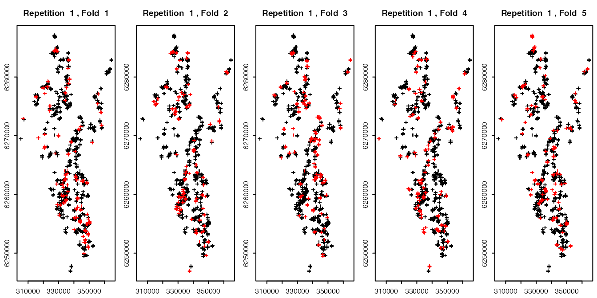

vignettes/spatial-modeling-use-case.Rmd
spatial-modeling-use-case.RmdGeospatial data scientists often make use of a variety of statistical and machine learning techniques for spatial prediction in applications such as landslide susceptibility modeling (Goetz et al. 2015) or habitat modeling (Knudby, Brenning, and LeDrew 2010). Novel and often more flexible techniques promise improved predictive performances as they are better able to represent nonlinear relationships or higher-order interactions between predictors than less flexible linear models.
Nevertheless, this increased flexibility comes with the risk of possible over-fitting to the training data. Since nearby spatial observations often tend to be more similar than distant ones, traditional random cross-validation is unable to detect this over-fitting whenever spatial observations are close to each other (e.g. Brenning (2005)). Spatial cross-validation addresses this by resampling the data not completely randomly, but using larger spatial regions. In some cases, spatial data is grouped, e.g. in remotely-sensed land use mapping grid cells belonging to the same field share the same management procedures and cultivation history, making them more similar to each other than to pixels from other fields with the same crop type.
This package provides a customizable toolkit for cross-validation (and bootstrap) estimation using a variety of spatial resampling schemes. More so, this toolkit can even be extended to spatio-temporal data or other complex data structures. This vignette will walk you through a simple case study, crop classification in central Chile (Peña and Brenning 2015).
This vignette is based on code that Alex Brenning developed for his course on ‘Environmental Statistics and GeoComputation’ that he teaches at Friedrich Schiller University Jena, Germany. Please take a look at our program and spread the word!
As a case study we will carry out a supervised classification analysis using remotely-sensed data to predict fruit-tree crop types in central Chile. This data set is a subsample of data from (Peña and Brenning 2015).
data("maipo", package = "sperrorest")The remote-sensing predictor variables were derived from an image times series consisting of eight Landsat images acquired throughout the (southern hemisphere) growing season. The data set includes the following variables:
Response
croptype: response variable (factor) with 4 levels: ground truth informationPredictors
b[12-87]: spectral data, e.g. b82 = image date #8, spectral band #2ndvi[01-08]: Normalized Difference Vegetation Index, e.g. #8 = image date #8ndwi[01-08]: Normalized Difference Water Index, e.g. #8 = image date #8Others
field: field identifier (grouping variable - not to be used as predictor)utmx, utmy: x/y location; not to be used as predictorsAll but the first four variables of the data set are predictors; their names are used to construct a formula object:
predictors <- colnames(maipo)[5:ncol(maipo)]
# Construct a formula:
fo <- as.formula(paste("croptype ~", paste(predictors, collapse = "+")))Here we will take a look at a few classification methods with varying degrees of computational complexity and flexibility. This should give you an idea of how different models are handled by {sperrorest}, depending on the characteristics of their fitting and prediction methods. Please refer to (James et al. 2013) for background information on the models used here.
LDA is simple and fast, and often performs surprisingly well if the problem at hand is ‘linear enough’. As a start, let’s fit a model with all predictors and using all available data:
Predict the croptype with the fitted model and calculate the misclassification error rate (MER) on the training sample:
## [1] 0.0437But remember that this result is over-optimistic because we are re-using the training sample for model evaluation. We will soon show you how to do better with cross-validation.
We can also take a look at the confusion matrix but again, this result is overly optimistic:
table(pred = pred, obs = maipo$croptype)## obs
## pred crop1 crop2 crop3 crop4
## crop1 1294 8 4 37
## crop2 50 1054 4 44
## crop3 0 0 1935 6
## crop4 45 110 29 3093Classification and regression trees (CART) take a completely different approach—they are based on yes/no questions in the predictor variables and can be referred to as a binary partitioning technique. Fit a model with all predictors and default settings:
fit <- rpart(fo, data = maipo)
## optional: view the classiciation tree
# par(xpd = TRUE)
# plot(fit)
# text(fit, use.n = TRUE)Again, predict the croptype with the fitted model and calculate the average MER:
## [1] 0.113Here the predict call is slightly different. Again, we could calculate a confusion matrix.
table(pred = pred, obs = maipo$croptype)## obs
## pred crop1 crop2 crop3 crop4
## crop1 1204 66 0 54
## crop2 47 871 38 123
## crop3 38 8 1818 53
## crop4 100 227 116 2950Bagging, bundling and random forests build upon the CART technique by fitting many trees on bootstrap resamples of the original data set (Breiman 1996) (Breiman 2001) (Hothorn and Lausen 2005). They differ in that random forest also samples from the predictors, and bundling adds an ancillary classifier for improved classification. We will use the nowadays widely used randomForest() here.
fit <- ranger(fo, data = maipo)
fit## Ranger result
##
## Call:
## ranger(fo, data = maipo)
##
## Type: Classification
## Number of trees: 500
## Sample size: 7713
## Number of independent variables: 64
## Mtry: 8
## Target node size: 1
## Variable importance mode: none
## Splitrule: gini
## OOB prediction error: 0.62 %Let’s take a look at the MER achieved on the training sample:
## [1] 0
table(pred = pred$predictions, obs = maipo$croptype)## obs
## pred crop1 crop2 crop3 crop4
## crop1 1389 0 0 0
## crop2 0 1172 0 0
## crop3 0 0 1972 0
## crop4 0 0 0 3180Isn’t this amazing? Only one grid cell is misclassified by the bagging classifier! Even the OOB (out-of-bag) estimate of the error rate is < 1%. Too good to be true? We’ll see…
Of course we can’t take the MER on the training set too seriously—it is biased. But we’ve heard of cross-validation, in which disjoint subsets are used for model training and testing. Let’s use {sperrorest} for cross-validation.
Also, at this point we should highlight that the observations in this data set are pixels, and multiple grid cells belong to the same field. In a predictive situation, and when field boundaries are known (as is the case here), we would want to predict the same class for all grid cells that belong to the same field. Here we will use a majority filter. This filter ensures that the final predicted class type of every field is the most often predicted croptype within one field.
First, we need to create a wrapper predict method for LDA for sperrorest(). This is necessary in order to accomodate the majority filter, and also because class predictions from lda’s predict method are hidden in the $class component of the returned object.
lda_predfun <- function(object, newdata, fac = NULL) {
library(nnet)
majority <- function(x) {
levels(x)[which.is.max(table(x))]
}
majority_filter <- function(x, fac) {
for (lev in levels(fac)) {
x[fac == lev] <- majority(x[fac == lev])
}
x
}
pred <- predict(object, newdata = newdata)$class
if (!is.null(fac)) pred <- majority_filter(pred, newdata[, fac])
return(pred)
}To ensure that custom predict-functions will work with sperrorest(), we need to wrap all custom functions in one single function. Otherwise, sperrorest() might fail during execution.
Finally, we can run sperrorest() with a non-spatial sampling setting (partition_cv()). In this example we use a ‘10 repetitions - 5 folds’ setup. In reality, we recommend to use 100 repetitions to reduce the influence of random partitioning.
res_lda_nsp <- sperrorest(fo,
data = maipo, coords = c("utmx", "utmy"),
model_fun = lda,
pred_fun = lda_predfun,
pred_args = list(fac = "field"),
smp_fun = partition_cv,
smp_args = list(repetition = 1:10, nfold = 5),
progress = FALSE
)
lapply(res_lda_nsp$error_rep, summary)## $train_error
## Min. 1st Qu. Median Mean 3rd Qu. Max.
## 0.0325 0.0334 0.0338 0.0337 0.0342 0.0344
##
## $train_accuracy
## Min. 1st Qu. Median Mean 3rd Qu. Max.
## 0.966 0.966 0.966 0.966 0.967 0.967
##
## $train_events
## Min. 1st Qu. Median Mean 3rd Qu. Max.
## 4688 4688 4688 4688 4688 4688
##
## $train_count
## Min. 1st Qu. Median Mean 3rd Qu. Max.
## 30852 30852 30852 30852 30852 30852
##
## $test_error
## Min. 1st Qu. Median Mean 3rd Qu. Max.
## 0.0373 0.0388 0.0396 0.0397 0.0408 0.0421
##
## $test_accuracy
## Min. 1st Qu. Median Mean 3rd Qu. Max.
## 0.958 0.959 0.960 0.960 0.961 0.963
##
## $test_events
## Min. 1st Qu. Median Mean 3rd Qu. Max.
## 1172 1172 1172 1172 1172 1172
##
## $test_count
## Min. 1st Qu. Median Mean 3rd Qu. Max.
## 7713 7713 7713 7713 7713 7713To run a spatial cross-validation at the field level, we can use partition_factor_cv() as the sampling function. Since we are using 5 folds, we get a coarse 80/20 split of our data. 80% will be used for training, 20% for testing our trained model.
To take a look where our training and tests sets will be partitioned on each fold, we can plot them. The red colored points represent the test set in each fold, the black colored points the training set. Note that because we plotted over 7000 points, overplotting occurs and since the red crosses are plotted after the black ones, it seems visually that way more than ~20% of red points exist than it is really the case.
resamp <- partition_factor_cv(maipo, nfold = 5, repetition = 1:1, fac = "field")
plot(resamp, maipo, coords = c("utmx", "utmy"))
Subsequently, we have to specify the location of the fields (fac = "field") in the prediction arguments (pred_args) and sampling arguments (smp_args) in sperrorest().
res_lda_sp <- sperrorest(fo,
data = maipo, coords = c("utmx", "utmy"),
model_fun = lda,
pred_fun = lda_predfun,
pred_args = list(fac = "field"),
smp_fun = partition_factor_cv,
smp_args = list(fac = "field", repetition = 1:10, nfold = 5),
benchmark = TRUE, progress = FALSE
)
res_lda_sp$benchmark$runtime_performance## Time difference of 49.3 secs
lapply(res_lda_sp$error_rep, summary)## $train_error
## Min. 1st Qu. Median Mean 3rd Qu. Max.
## 0.0269 0.0290 0.0301 0.0298 0.0312 0.0316
##
## $train_accuracy
## Min. 1st Qu. Median Mean 3rd Qu. Max.
## 0.968 0.969 0.970 0.970 0.971 0.973
##
## $train_events
## Min. 1st Qu. Median Mean 3rd Qu. Max.
## 4688 4688 4688 4688 4688 4688
##
## $train_count
## Min. 1st Qu. Median Mean 3rd Qu. Max.
## 30852 30852 30852 30852 30852 30852
##
## $test_error
## Min. 1st Qu. Median Mean 3rd Qu. Max.
## 0.0605 0.0629 0.0651 0.0682 0.0758 0.0788
##
## $test_accuracy
## Min. 1st Qu. Median Mean 3rd Qu. Max.
## 0.921 0.924 0.935 0.932 0.937 0.939
##
## $test_events
## Min. 1st Qu. Median Mean 3rd Qu. Max.
## 1172 1172 1172 1172 1172 1172
##
## $test_count
## Min. 1st Qu. Median Mean 3rd Qu. Max.
## 7713 7713 7713 7713 7713 7713In the case of Random Forest, the customized pred_fun looks as follows; it is only required because of the majority filter, without it, we could just omit the pred_fun and pred_args arguments below.
rf_predfun <- function(object, newdata, fac = NULL) {
library(nnet)
majority <- function(x) {
levels(x)[which.is.max(table(x))]
}
majority_filter <- function(x, fac) {
for (lev in levels(fac)) {
x[fac == lev] <- majority(x[fac == lev])
}
x
}
pred <- predict(object, data = newdata)
if (!is.null(fac)) pred <- majority_filter(pred$predictions, newdata[, fac])
return(pred)
}
res_rf_sp <- sperrorest(fo,
data = maipo, coords = c("utmx", "utmy"),
model_fun = ranger,
pred_fun = rf_predfun,
pred_args = list(fac = "field"),
smp_fun = partition_factor_cv,
smp_args = list(
fac = "field",
repetition = 1:10, nfold = 5
),
benchmark = TRUE, progress = 2
)
lapply(res_rf_sp$error_rep, summary)## $train_error
## Min. 1st Qu. Median Mean 3rd Qu. Max.
## 0 0 0 0 0 0
##
## $train_accuracy
## Min. 1st Qu. Median Mean 3rd Qu. Max.
## 1 1 1 1 1 1
##
## $train_events
## Min. 1st Qu. Median Mean 3rd Qu. Max.
## 4688 4688 4688 4688 4688 4688
##
## $train_count
## Min. 1st Qu. Median Mean 3rd Qu. Max.
## 30852 30852 30852 30852 30852 30852
##
## $test_error
## Min. 1st Qu. Median Mean 3rd Qu. Max.
## 0.0753 0.0860 0.0919 0.0895 0.0947 0.0957
##
## $test_accuracy
## Min. 1st Qu. Median Mean 3rd Qu. Max.
## 0.904 0.905 0.908 0.910 0.914 0.925
##
## $test_events
## Min. 1st Qu. Median Mean 3rd Qu. Max.
## 1172 1172 1172 1172 1172 1172
##
## $test_count
## Min. 1st Qu. Median Mean 3rd Qu. Max.
## 7713 7713 7713 7713 7713 7713
summary(res_rf_sp$error_rep$test_accuracy)## Min. 1st Qu. Median Mean 3rd Qu. Max.
## 0.904 0.905 0.908 0.910 0.914 0.925What a surprise! {ranger}‘s classification is not that good after all, if we acknowledge that in ’real life’ we wouldn’t be making predictions in situations where the class membership of other grid cells in the same field is known in the training stage. So spatial dependence does matter.
Given all the different sampling functions and the required custom predict functions (e.g. rf_predfun()) in this example, you might be a little confused which function to use for your use case. If you want to do a “normal”, i.e. non-spatial cross-validation we recommend to use partition_cv() as smp_fun in sperrorest(). If you want to perform a spatial cross-validation (and you do not have a grouping structure like fields in this example), partition_kmeans() takes care of spatial partitioning. In most cases you can simply use the generic predict() method for your model (= skip this argument in sperrorest()). Check our “custom model and predict functions” vignette for more information on cases where adjustments are needed.
For further questions/issues, please open an issue in the Github repo.
Breiman, Leo. 2001. “Random Forests.” Machine Learning 45 (1): 5–32. https://doi.org/10.1023/a:1010933404324.
———. 1996. “Bagging Predictors.” Machine Learning 24 (2): 123–40. https://doi.org/10.1007/bf00058655.
Brenning, A. 2005. “Spatial Prediction Models for Landslide Hazards: Review, Comparison and Evaluation.” Natural Hazards and Earth System Science 5 (6): 853–62. https://doi.org/10.5194/nhess-5-853-2005.
Goetz, J. N., A. Brenning, H. Petschko, and P. Leopold. 2015. “Evaluating Machine Learning and Statistical Prediction Techniques for Landslide Susceptibility Modeling.” Computers & Geosciences 81 (August): 1–11. https://doi.org/10.1016/j.cageo.2015.04.007.
Hothorn, Torsten, and Berthold Lausen. 2005. “Bundling Classifiers by Bagging Trees.” Computational Statistics & Data Analysis 49 (4): 1068–78. https://doi.org/10.1016/j.csda.2004.06.019.
James, Gareth, Daniela Witten, Trevor Hastie, and Robert Tibshirani. 2013. An Introduction to Statistical Learning. Springer New York. https://doi.org/10.1007/978-1-4614-7138-7.
Knudby, Anders, Alexander Brenning, and Ellsworth LeDrew. 2010. “New Approaches to Modelling Fishhabitat Relationships.” Ecological Modelling 221 (3): 503–11. https://doi.org/10.1016/j.ecolmodel.2009.11.008.
Peña, M. A., and A. Brenning. 2015. “Assessing Fruit-Tree Crop Classification from Landsat-8 Time Series for the Maipo Valley, Chile.” Remote Sensing of Environment 171 (December): 234–44. https://doi.org/10.1016/j.rse.2015.10.029.